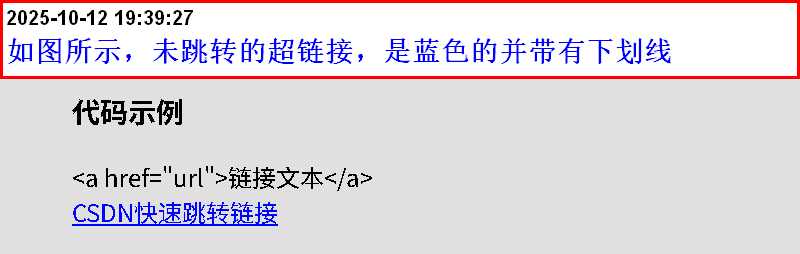
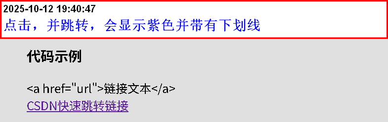
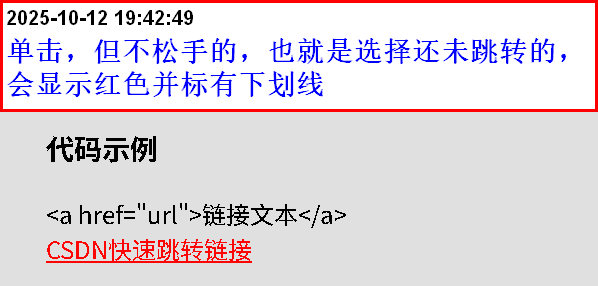

超文本链接描述
主要作用：跳转(想跳哪里条哪里)
- HTML使用标签<a>来设置超文本链接
- 超链接可以是一个字，一个词，或者一组词，也可以是一幅画像……
- 可以点击以上内容实现跳转到新的文档或者当前文档中的某个部分
具体描述
具体操作
代码示例
<a href="url">链接文本</a> CSDN快速跳转链接注意事项
- 超文本链接标签是双标签
- 与属性href搭配使用，里面的内容是需要跳转文本或内容的具体路径
- 在中间的内容可以理解为注释，告诉读者或作者自己这个链接是跳转到什么文本。
- 中间内容，可以是一张图片，一串文本……,只要包含到<a></a>标签内都可以实现跳转
- 超链接的表现：
当鼠标移动至超链接上，默认箭头变为手指的图标
使用图片加文本的形式，创建超链接
CSDN快速跳转链接
- 一个未访问过的链接显示为蓝色字体并带有下划线 
- 访问过的链接显示为紫色并带有下划线 
- 点击超链接时，链接显示为红色并带有下划线 